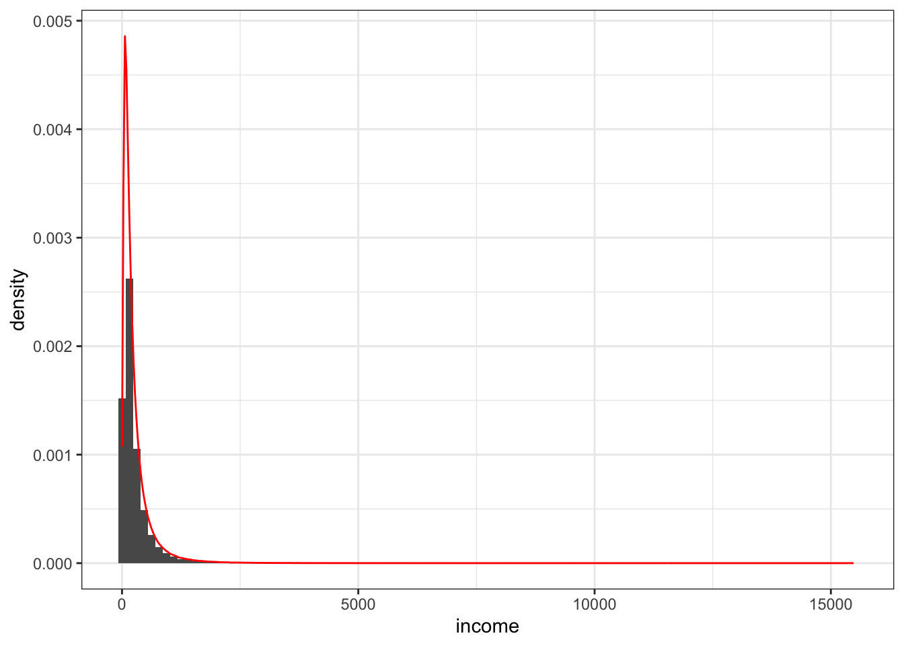
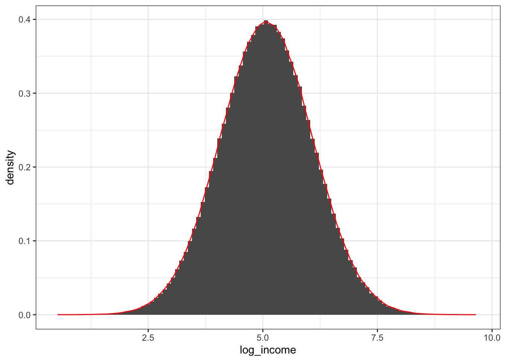
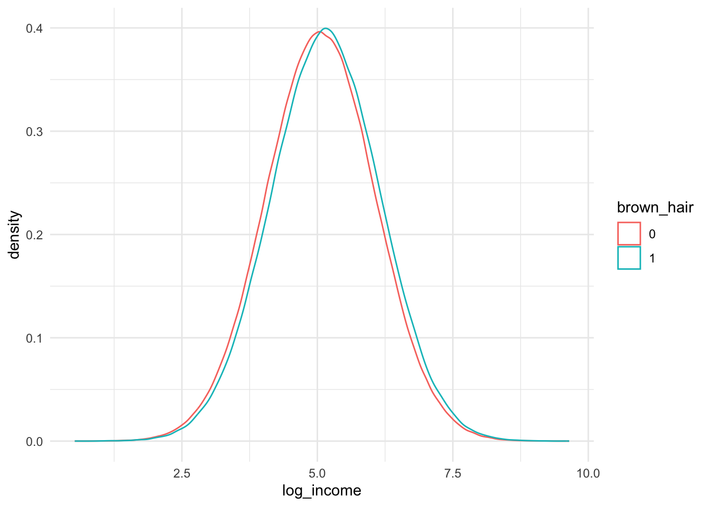
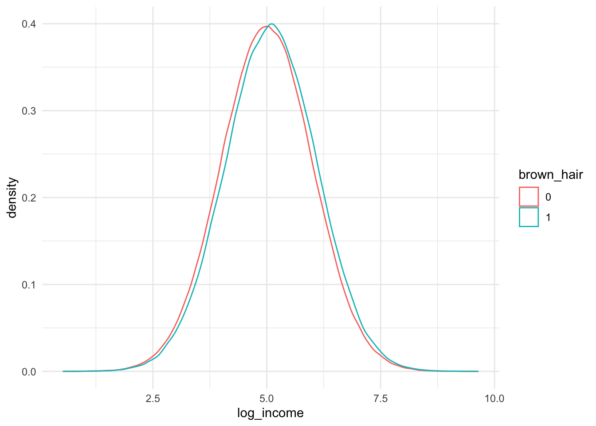
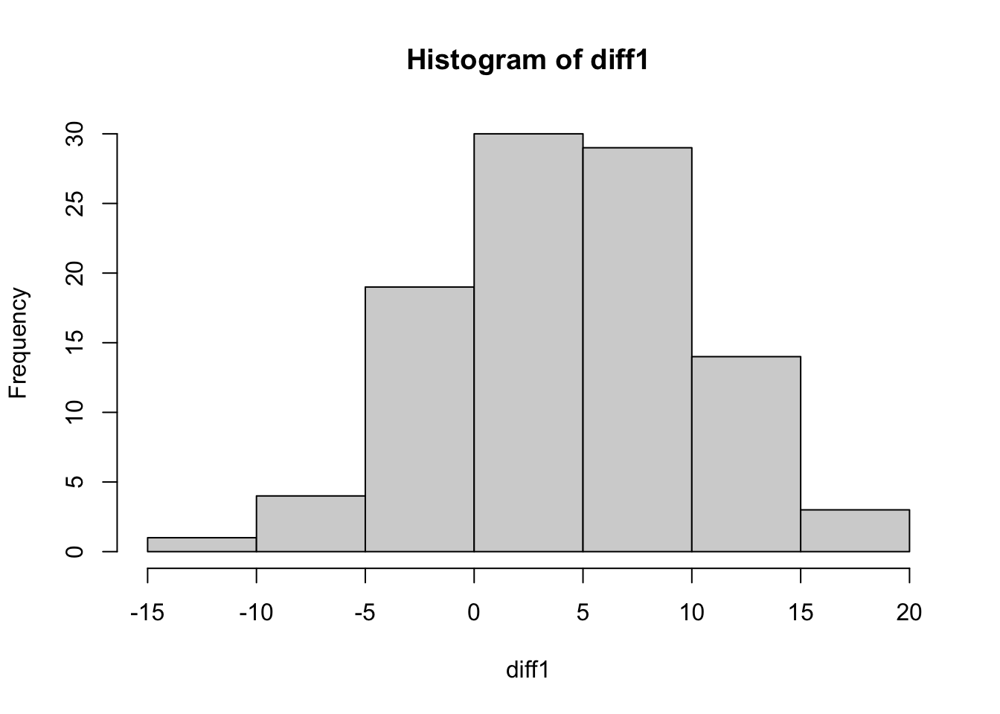

Usando DGP para enxergar problemas na análise descritiva
Author
Isabella Munhoz
Published
July 21, 2024
Motivação
Acredito que, atualmente, o livro “The Effect” do professor Nick Huntington-Klein tem sido meu maior companheiro de estudo.
Caminho em ciência de dados me levou a estudar inúmeras coisas, mas com certeza causalidade tem ganhado um espaço grande no meu coração.
Nick Huntington-Klein tem a qualidade que mais admiro em um professor: traduzir temas complexos de forma simples através de exemplos palpáveis, que nos permitem trazer o conteúdo teórico para a realidade.
Um ponto chave na carreira do cientista de dados também é conseguir traduzir o que fazemos para áreas não técnicas (as áreas para as quais vamos, em geral, entregar nossos modelos e conclusões).
Durante a leitura do capítulo X, um exemplo que ele deu me chamou a atenção… Ness parte do livro, Nick (já sinto que ele um amigo próximo) trouxe um exemplo que me acendeu uma luz de como traduzir para áreas não técnicas como análises descritivas, que não levam em conta variáveis confundidoras, podem nos levar a conclusões equivocadas. Pra isso, ele usou o processo gerador de dados para simular uma população e mostrar como podemos concluir algo errado quando não desenhamos os caminhos alternativos que explicam causalidade.
Vou tentar usar o exemplo dele (e algumas outras coisas que refleti enquanto lia esse capítulo) para mostrar como as vriáveis confundidoras podem nos colcar em apuros.
Criando o nosso universo
Vamos começar simulando uma população. Dado que estamos criando todas as regras de como nosso universo funciona, sabemos exatamente o processo gerador dos dados (DGP) e podemos concluir como as coisas acontecem…
No nosso mudinho, temos as seguinte regras:
30% dos indivíduos possuem diploma
20% dos indivíduos possuem cabelo castanho
O salário dos indivíduos segue uma distrbuição log-normal
Se um indivíduo tem diploma, seu salário aumenta em 20%
Se um indivíduo tem cabelo castanho, seu salário aumenta em 10%
# definindo o tamanho da populaçãopop_size <-1000000set.seed(123)population <-tibble(# gerando o id do indivíduoid =1:pop_size,# gerando uma distribuição binomial, com 30% de probabilidade do usuário em ter um diplomacollege_degree =rbinom(pop_size, size =1, prob =0.3),# gerando uma distribuição binomial, com 20% de probabilidade do usuário em ter um cabelo castanhobrown_hair =rbinom(pop_size, size =1, prob =0.2))# sumarizando os dados da populaçãopopulation |>summarise(perc_college_degree = (sum(college_degree) /n()) *100,perc_brown_hair = (sum(brown_hair) /n()) *100 ) |>kable(caption ="Tabela", format ="html") |>kable_styling(bootstrap_options =c("striped", "hover", "condensed", "responsive"),full_width =FALSE,position ="center" )
Tabela
perc_college_degree
perc_brown_hair
29.9644
20.0046
Para cada indivíduo gerado na nossa população, vamos calcular o salário conforme as regras estabelecidas acima.
Um pequeno parênteses sobre o cálculo do salário
The following is rendered as bold text.
Conforme dito, o salário é log-normal. A primeira vez que pensei em como simular, foi … Contudo, olhando no livro, o autor indicava calulcar o salário da seguinte maneira… Só queria mostrar aqui que ambos os jeitos equivalem a mesma coisa…
Vamos seguir no cógido calculando o salário conforme o Nick indicou…
Plot do salário

Plot do log do salário

Como sabemos que indivíduos de cabelo castanho tem um salário 10% maior, esperamos ver isso nos dados…

Tabela
brown_hair
mean_log_income
0
5.059141
1
5.155302
Se segmentamos essa análise somente para indivíduos que não possuem diploma, chegamos na mesma conclusão.

Tabela
brown_hair
mean_log_income
0
4.999011
1
5.092591
Tabela
brown_hair
mean_log_income
0
5.199745
1
5.301623
So far so good… Dentro dos segmentos, conseguimos notar que o salário tem a diferença esperada. Um outro jeito que podemos ver isso é olhando para a porcentagem de indivíduos de cabelo castanho na população e nas segmentação college == 0 e college == 1. Em todos esses grupos, a quantidade de usuário se mantém igual ao DPG (de ~20%).
Uma outra conclusão que podemo tirar é que as variáveis college_degree e bronw_hair são independentes, porque uma variáve não afeta a distribuição da outra variável na população.
Criando um outro universo…
# A tibble: 1 × 1
`sum(hair)/n()`
<dbl>
1 0.436
# A tibble: 1 × 1
`sum(hair)/n()`
<dbl>
1 0.516
# A tibble: 1 × 1
`sum(hair)/n()`
<dbl>
1 0.243

[1] 292
[1] 206
# A tibble: 1 × 3
n s perc
<int> <dbl> <dbl>
1 573 230 40.1